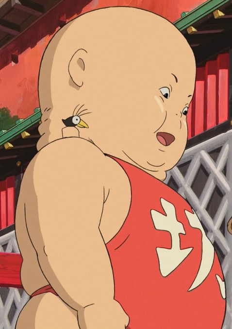

Девочка Тихиро переезжает с родителями в новый дом в глубинке Японии. По дороге они попадают в странный город и обнаруживают накрытый стол с едой. Родители начинают есть и превращаются в свиней. Выясняется, что пустынный город — это другой мир, населённый привидениями, а заколдовала родителей девочки злая ведьма Юбаба. Теперь Тихиро просто обязана спасти родных и выбраться из мира призраков.
В 2003 году режиссёр Хаяо Миядзаки получил за этот мультфильм «Оскар».
Персонажи
Тихиро Огино Главная героиня фильма. В интервью создатель фильма Хаяо Миядзаки упоминает, что Тихиро - самая обычная десятилетняя девочка. Сэйю Хиираги Руми, озвучившая Тихиро для фильма, даёт несколько иную характеристику Тихиро: «Она своенравная и балованная, очень похожа на современных девочек». В начале фильма Тихиро капризничает, она явно недовольна переездом и заранее считает свою будущую школу скучной и неинтересной. С развитием сюжета Тихиро проявляет свои лучшие черты характера - она ответственна, терпелива и бескорыстна.
Хаку (Нигихаями кохаку нуси)
Дракон и мальчик, имя которого переводится как «хозяин янтарной реки». Он появился «неожиданно и непонятно откуда», как и Тихиро (по словам дедушки Камадзи), явился к Юбабе и захотел обучаться колдовству. Она сделала его своим учеником. Дедушка Камадзи пытался отговорить Хаку, но тот твёрдо стоял на своём и со временем стал правой рукой колдуньи Юбабы. После встречи с Тихиро Хаку помогает ей в её начинаниях. Вскоре Хаку понимает, что встреча с Тихиро постепенно меняет его и напоминает о том, каким он был, и почему он здесь. Память, которую забрала Юбаба вместе с его именем, возвращается, и он вспоминает, что однажды спас Тихиро. На самом деле Хаку не человек, а дракон, хранитель реки в человеческом облике. Когда-то в мире людей Тихиро упала в реку, пытаясь поймать упавшую туфельку, и могла утонуть, если бы не Хаку, который как раз и обитал в этой реке. Когда Тихиро летит на Драконе от Дзэнибы, она вспоминает этот момент из детства и реку, которая называлась Кохакугава. Хаку тоже вспоминает эту встречу. Тихиро говорит, что его настоящее имя — Нигихаями Кохаку Нуси, Хозяин реки. Вспомнив это, он превращается в человека, и вместе с Тихиро они летят к Юбабе. Он помог Тихиро-Сэн выбраться из мира духов и вернуть родителей.
Юбаба Хозяйка купален «Абура-я», того места, куда попала Тихиро. Страшная колдунья, которая слов на ветер не бросает, не любит, когда ей перечат, но всегда сдерживает свои обещания. Наставница Хаку. Всех держит в своих ежовых рукавицах, кроме своего родного сына, которого ужасно балует. Вершит тайные дела у себя в кабинете, посылает Хаку на задания, которые не отличаются безопасностью. Каждый вечер перевоплощается в птицу и проверяет свою территорию. Юбабу часто можно застать за пересчитыванием золота и перебиранием драгоценностей, ей приятно чувствовать себя хозяйкой такого крупного предприятия, с немалым богатством. Неработающие люди и существа её раздражают, и она расправляется с ними быстро, превращает их либо в свиней, либо в угольки, либо ещё во что-либо малоприятное. Характер Юбабы переменчив, но всё же устойчив, если дело касается крупного обслуживания высокопоставленных духов.
Дзэниба Сестра-близнец Юбабы. Живёт в скромном домике с огородом, рядом со станцией «Дно болота», но и в её доме хватает тайн и загадок. Она не одобряла жизни своей сестры, такой пышной и богатой, поэтому предпочла не связывать себя с этим. Но Юбаба не дала Дзэнибе забыть о их связи, она посылает Хаку украсть печать у Дзэнибы. Печать защищена смертельным проклятием, укравший её Хаку должен умереть. Когда Тихиро решает вернуть печать и спасти Хаку, Дзэниба не сожалеет, что жестоко поступила с Хаку (потому, что «он — вор»), но всё же прощает его, показывая, что от любого дурного поступка можно очиститься. Она рада и тому, что Каонаси остался с ней, потому что самой с хозяйством, хоть и с небольшим, справляться трудно — ведь при этом она старается не использовать колдовства. На прощание Дзэниба подарила Тихиро резиночку для волос, которую все, кто были у Дзэнибы, сплели вместе. Дзэниба заботлива и скромна по своей природе, не требует ничего большего от жизни, но, как можно убедиться, способна дать жёсткий отпор.
Безликий Бог Каонаси Божество, которое не имеет своего лица, постоянно в поисках нового лица. По словам Миядзаки, ему хотелось «показать бога-бродягу, у которого нет дома и аналогов которого нет в японском фольклоре». Сначала выбор Безликого пал на Тихиро, но когда он предлагал ей помощь, она отказывалась. Потом ему попался жадный лягушонок, который хотел выковырять из щелей в полу остатки золотого песка, оставшегося после обслуживания Речного Божества (которое было настолько грязным, что вначале его приняли за Духа помоек). Каонаси съел его и стал таким, каким был лягушонок: ненасытным, жадным, и постепенно стал перевоплощаться в чудовище и поедать работников купален. Тихиро даёт ему горький пирожок, и он выплёвывает лягушонка и других работников купален и следует на поезде вместе с Тихиро к Дзэнибе. Она просит Безликого помочь ей с хозяйством и он остаётся.
Дедушка Камадзи Шестирукий истопник в банях Юбабы, руководящий командой Сусуватари. Почти всё время проводит в работе — даже ест и спит, не покидая рабочего места. Он является проводником для Тихиро в новом для неё мире, потому что первым указывает ей на правила, которые здесь царят, — он делает это не только при помощи слов, но и самим своим видом. Обладающий на первый взгляд устрашающей внешностью — множеством рук, которые способны, казалось бы, до бесконечности растягиваться (в соответствии со спецификой занятия), усами Фридриха Ницше и глазами, скрытыми за тёмными стёклами очков, — он на самом деле преисполнен добродушия и готовности помочь. В душе он добряк и романтик. В первую же минуту знакомства с Тихиро он обманывает одну из работниц (Рин) и говорит, что это его внучка, и даже отдаёт припасённое лакомство, чтобы Тихиро устроили на работу. Он также разглядел любовь между Хаку и Тихиро, всячески пытается помочь им. Камадзи, которого другие работники ласково называют «дедушка», — действительно «хранитель очага» купален Абура-я, представляющий суть всего коллектива как организма, на деле, как это частенько бывает, сознательно оторвавшего себя от своей начальницы и даже в некоторой мере морально противостоящего ей.
Рин Девушка, служащая в банях Юбабы. Является наставницей Тихиро, которая стала работать у Юбабы. При первой встрече с Тихиро Рин постоянно торопила её, называла неумёхой, неуклюжей, тупицей и указывала на все недостатки. Но как только Рин узнала, что Тихиро получила работу, она была искренне за неё рада и обещала свою помощь во всём, сразу становясь в глазах Тихиро новым другом. Ворчливый, но добродушный человек, не лишённый очарования. Её мечта — накопить денег, чтобы уехать.

Бо Сын Юбабы. Ужасно избалованный и капризный малыш, который в несколько раз больше её самой. Он никогда не покидал своей комнаты из-за страха матери перед всевозможными инфекциями. Юбаба нечасто его посещала, только когда он сильно начинал бушевать и она бежала его успокаивать, ублажая его душу новыми игрушками или сладостями. Но при встрече Дзэниба превращает Бо в толстую крысу, о чем свидетельствует его хвост, и он отправляется с Тихиро к Дзэнибе. После возвращения Бо уже не кажется таким капризным, как раньше. Также после этого путешествия он сам встал на две ноги.
Сусуватари Помощники Камадзи в котельной купален «Абурая».Пугливые, робкие создания, которые живут в заброшенных домах и покрывают их пылью и сажей. Это маленькие, чёрные и пушистые, как мех, комочки сажи с любопытными глазами. В другом фильме Хаяо Миядзаки «Унесённые призраками» сусуватари показаны в качестве рабочих в котельной Дедушки Камадзи. Они движутся, паря над поверхностью, но могут произвольно отращивать тонкие ножки и ручки для выполнения возложенных на них заданий. Кроме того, они могут поднимать объекты во много раз тяжелее своего собственного веса. Сусуватари издают писклявые звуки, когда чем-то восхищены, и распадаются в сажу, если их раздавить.